Canonical product reference
Extension UI feature guide
Use this page when a visible label, count, status, export, workflow action, or limitation needs an exact implementation-backed explanation.
Canonical source: EXTENSION_UI_FEATURE_GUIDE.md. This public page renders that canonical guide and adds current extension-build screenshots so the public site stays grounded in the shipped extension UI.

Current extension-build evidence
Real extension screenshots
Captured from the current MV3 extension build on safe local fixtures. These screenshots supplement the written guide. They do not replace the technical explanations below.
Core panel, triage, and review buckets
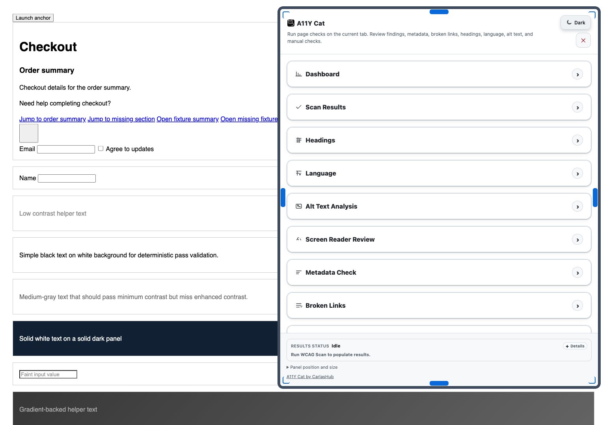
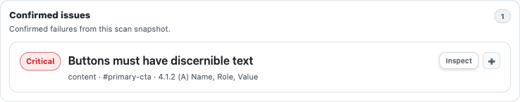
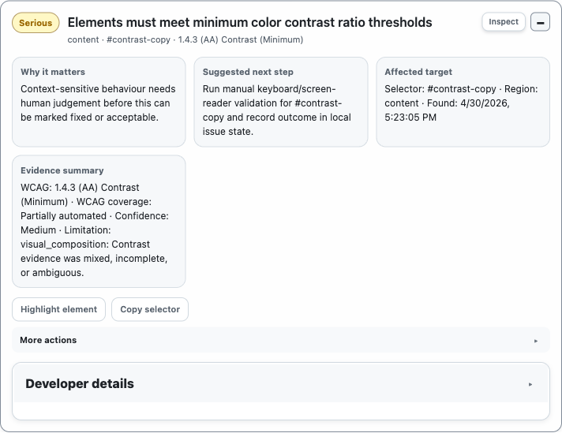
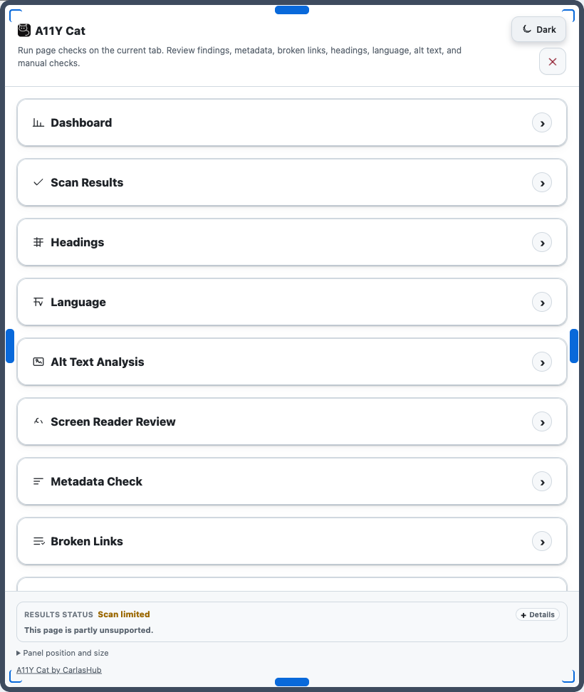
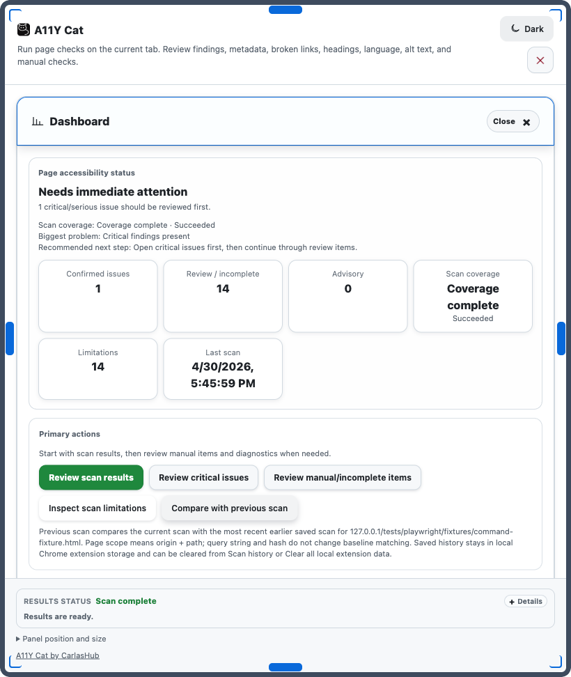
Focused review modules
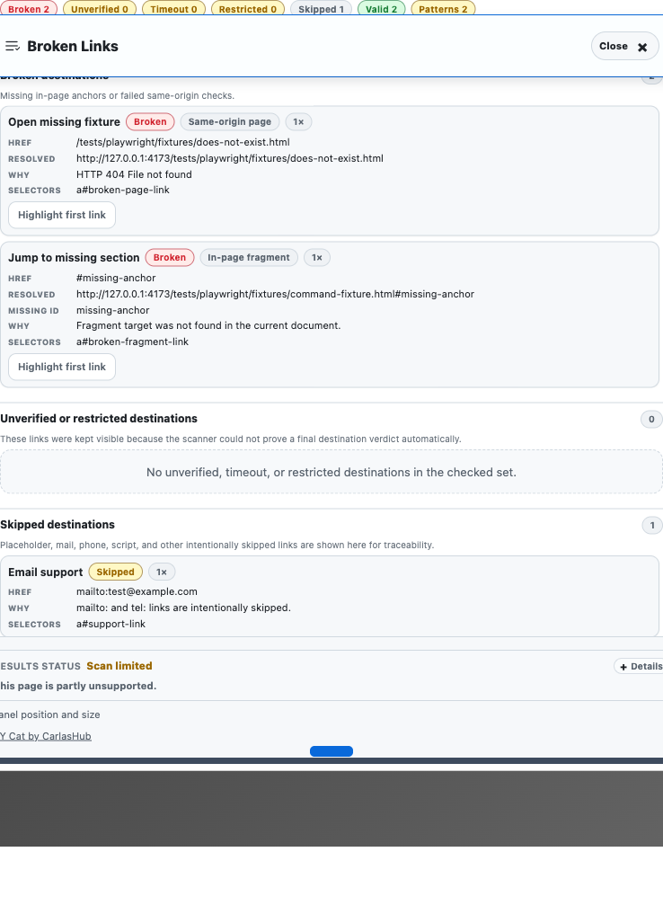
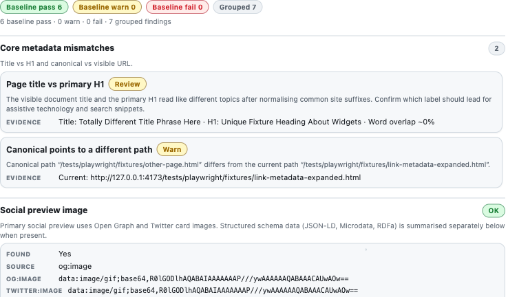
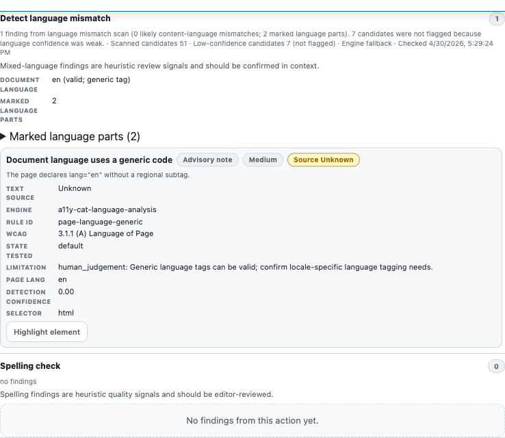
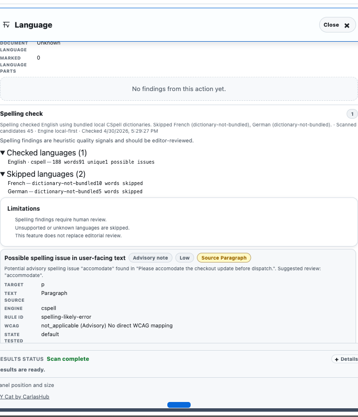
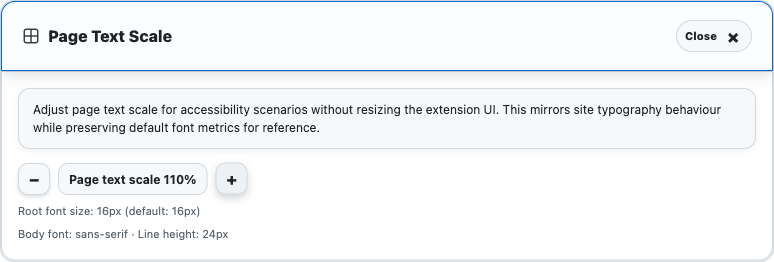
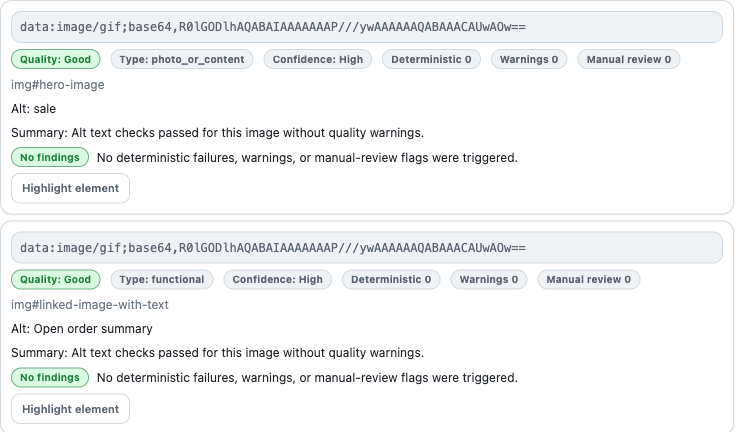
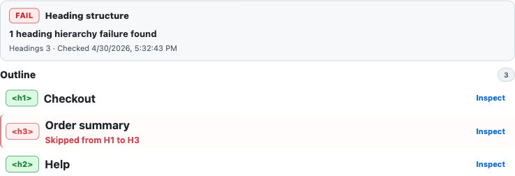
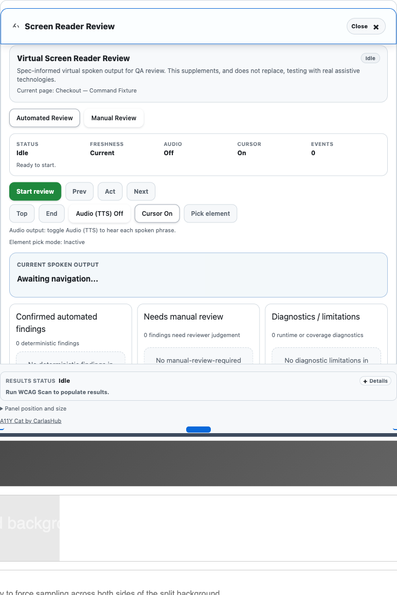
Diagnostics, exports, privacy, and controls
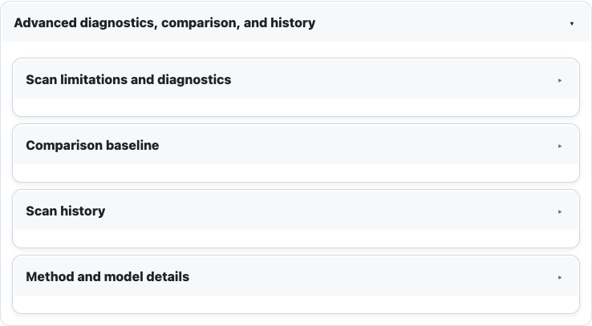

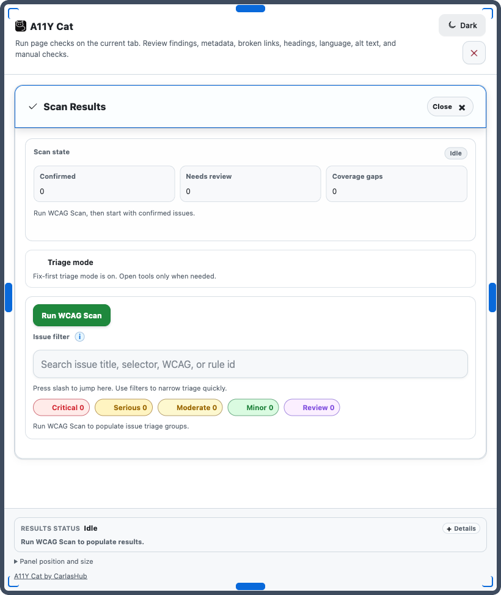
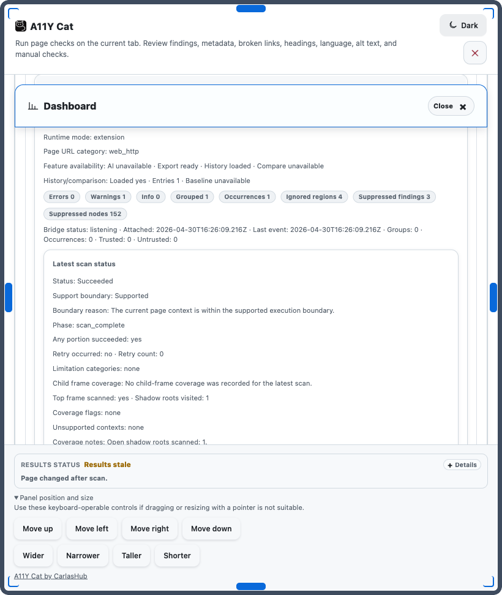
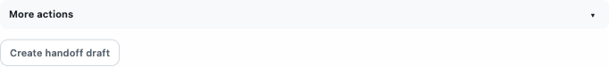
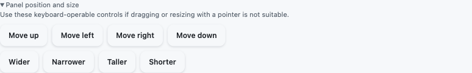